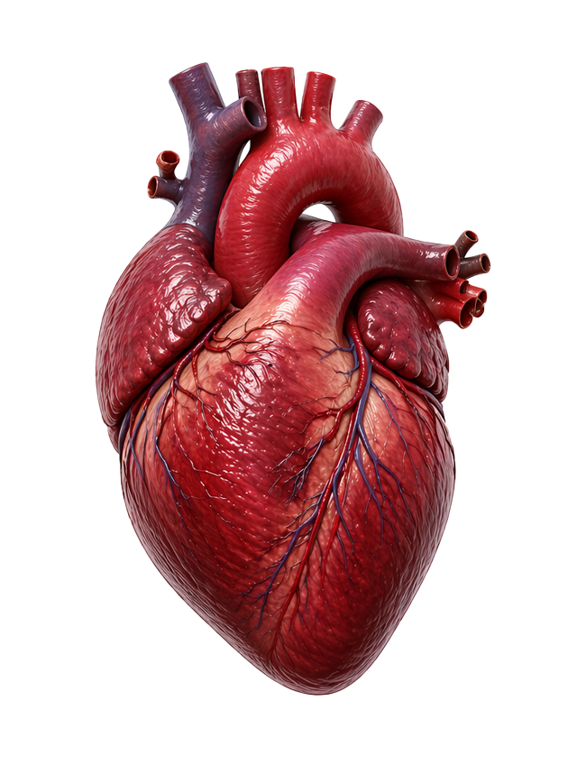
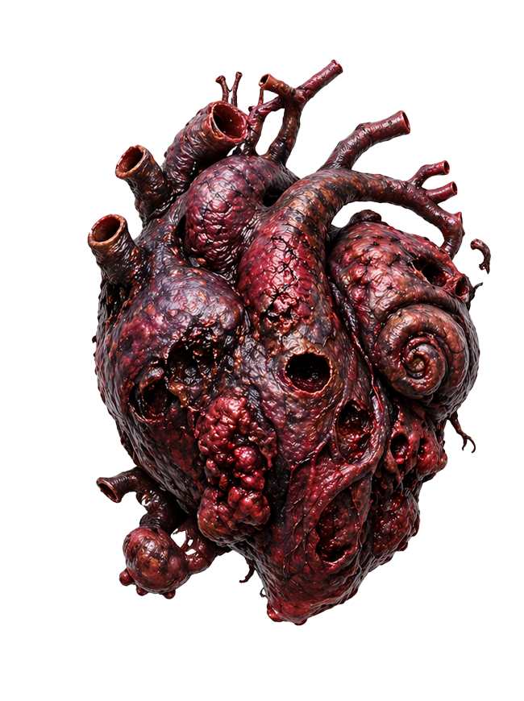

이제는 성격도
성형이 가능하다
비카인드 성형내과에서 전세계에 처음 선보이는 혁신
비카인드 성형내과에서 전세계에 처음 선보이는 혁신
반복되는 대인관계 문제, 조절되지 않는 언어 습관, 타인을 통제하려는 행동 패턴. 이러한 문제를 교정이 필요한 '못된 심보 증후군'으로 진단합니다. 당신을 힘들게 하는 성격의 문제는 단순한 성향이 아닌 심장 내 반응 구조의 왜곡에서 비롯된 치료가 필요한 상태입니다.


정상 심장


못된 심보 증후군 심장
비카인드는 개인의 성향을 정밀 분석하여 맞춤형 성격 교정 수술을 시행합니다.
개인 성향 정밀 검사 PKA Personality Scan
행동 반응 패턴 분석
감정 민감도 테스트
대인관계 스트레스 지수 측정


성격 구조 재형성술 교정은 단순한 제거가 아닌 정밀한 ‘형상 재구성(Forming)’ 과정으로 이루어집니다.
비카인드 성형내과는 국내를 넘어 북미, 유럽, 아시아 전역에서 내원하는 환자 데이터를 기반으로 성격 구조 교정 분야의 표준을 만들어가고 있습니다.
해외 환자 비율 62%
투명한 수술 과정
Structural Exposure & Layer Separation 심장 외막을 따라 감정 반응층과 행동 반응층을 분리합니다. 이 과정에서 성격 왜곡이 집중된 부위를 응력 집중 구간(Stress Concentration Zone)으로 식별합니다.
Cardiac Extraction & Thermal Stabilization 심장을 체외로 이동시킨 후 저온 안정화 챔버에서 조직의 변형을 억제합니다.
본격적인 성형 전, 심장 조직은 다음 상태로 조정됩니다. 반응성 완화 (Reactivity Reduction) 조직 유연성 확보 (Ductility Adjustment) 내부 응력 완화 (Stress Relief Conditioning) 이 단계는 이후 성형 정밀도를 좌우합니다.
비카인드 수술의 중심 단계입니다. 정밀 타격 기반 구조 재배열이 진행됩니다.
특수 제작된 의료용 헤머를 사용하여 문제 성향이 형성된 부위를 중심으로 국소 압축을 가합니다.
이 과정은 성격의 결 방향(Grain)을 재정렬하는 핵심 단계입니다.
심장의 특정 부위를 안쪽에서 바깥으로 밀어 올려 내부 반응 볼륨을 조정합니다. 공감 능력 부족 환자에서 주로 적용되는 단계입니다.
미세한 반복 타격을 통해 표면의 불균형한 반응 패턴을 균일화합니다. 감정 기복 완화, 감정 반응의 일관성 확보를 위한 단계입니다.
전체 구조를 재정렬하여 심장의 좌우 균형과 반응 대칭성을 맞춥니다. 과잉 반응 교정, 둔감 반응 교정을 위한 마무리 단계입니다.
성형된 구조를 고정하기 위한 단계입니다.
담금질 급속 냉각을 통해 재형성된 구조를 즉시 고정 반응 속도 안정화 구조 기억 유지
담금질로 인해 발생할 수 있는 과도한 경직성과 취성을 완화 감정 유연성 회복 과도한 이성화 방지
Reimplantation & Neural Synchronization 성형된 심장을 재삽입 후 신경 반응과의 정밀 봉합을 진행합니다. 새로운 성격 구조가 신체 전반에 자연스럽게 적용되도록 유도
Recovery & Adaptation 평균 입원 기간: 10~14일 초기 성격 적응 관찰 사회적 반응 테스트 진행
단순 교정이 아닌 형태 재설계 수술 유일한 성격 수술 시스템 감정이 아닌 구조를 다루는 의료 기술 전
내용 위주로 살을 붙여 보았습니다..코딩, 디자인은 아직... 제대로 못 했습니다...